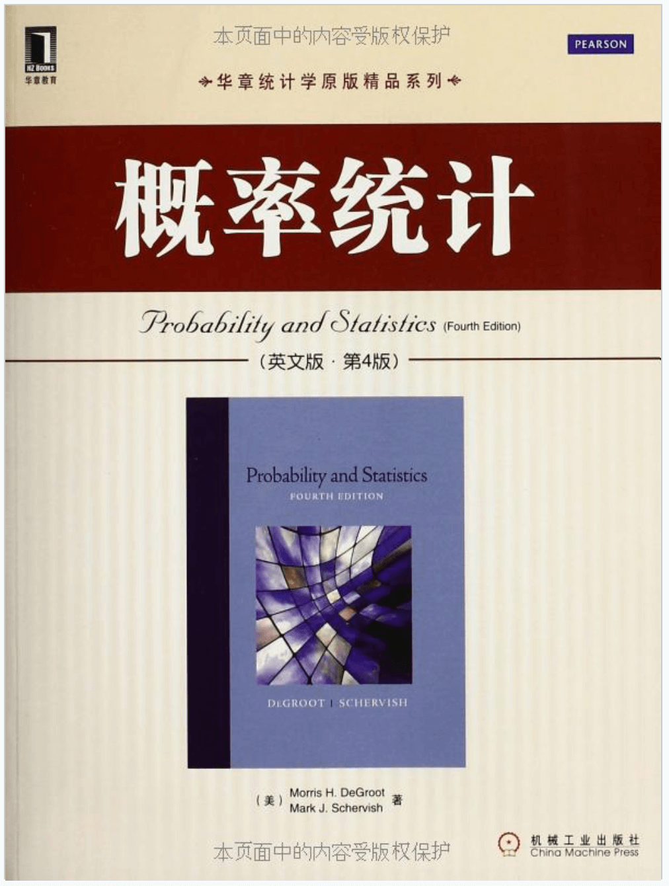
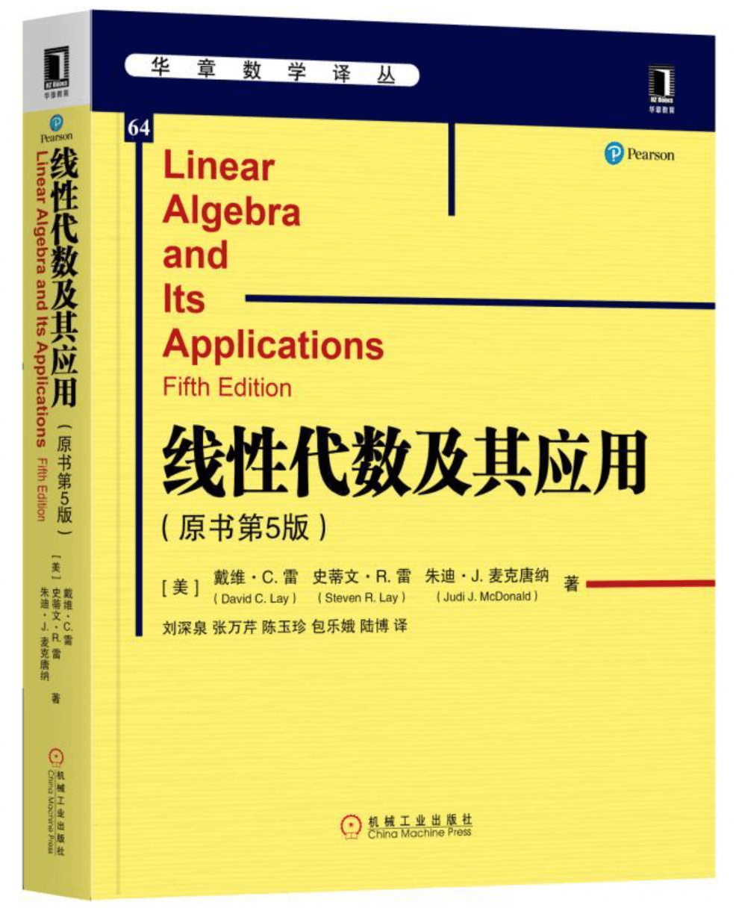

- 01 二进制：不了解计算机的源头，你学什么编程.md
- 02 余数：原来取余操作本身就是个哈希函数.md
- 03 迭代法：不用编程语言的自带函数，你会如何计算平方根？.md
- 04 数学归纳法：如何用数学归纳提升代码的运行效率？.md
- 05 递归（上）：泛化数学归纳，如何将复杂问题简单化？.md
- 06 递归（下）：分而治之，从归并排序到MapReduce.md
- 07 排列：如何让计算机学会“田忌赛马”？.md
- 08 组合：如何让计算机安排世界杯的赛程？.md
- 09 动态规划（上）：如何实现基于编辑距离的查询推荐？.md
- 10 动态规划（下）：如何求得状态转移方程并进行编程实现？.md
- 11 树的深度优先搜索（上）：如何才能高效率地查字典？.md
- 12 树的深度优先搜索（下）：如何才能高效率地查字典？.md
- 13 树的广度优先搜索（上）：人际关系的六度理论是真的吗？.md
- 14 树的广度优先搜索（下）：为什么双向广度优先搜索的效率更高？.md
- 15 从树到图：如何让计算机学会看地图？.md
- 16 时间和空间复杂度（上）：优化性能是否只是“纸上谈兵”？.md
- 17 时间和空间复杂度（下）：如何使用六个法则进行复杂度分析？.md
- 18 总结课：数据结构、编程语句和基础算法体现了哪些数学思想？.md
- 19 概率和统计：编程为什么需要概率和统计？.md
- 20 概率基础（上）：一篇文章帮你理解随机变量、概率分布和期望值.md
- 21 概率基础（下）：联合概率、条件概率和贝叶斯法则，这些概率公式究竟能做什么？.md
- 22 朴素贝叶斯：如何让计算机学会自动分类？.md
- 23 文本分类：如何区分特定类型的新闻？.md
- 24 语言模型：如何使用链式法则和马尔科夫假设简化概率模型？.md
- 25 马尔科夫模型：从PageRank到语音识别，背后是什么模型在支撑？.md
- 26 信息熵：如何通过几个问题，测出你对应的武侠人物？.md
- 27 决策树：信息增益、增益比率和基尼指数的运用.md
- 28 熵、信息增益和卡方：如何寻找关键特征？.md
- 29 归一化和标准化：各种特征如何综合才是最合理的？.md
- 30 统计意义（上）：如何通过显著性检验，判断你的A_B测试结果是不是巧合？.md
- 31 统计意义（下）：如何通过显著性检验，判断你的A_B测试结果是不是巧合？.md
- 32 概率统计篇答疑和总结：为什么会有欠拟合和过拟合？.md
- 33 线性代数：线性代数到底都讲了些什么？.md
- 34 向量空间模型：如何让计算机理解现实事物之间的关系？.md
- 35 文本检索：如何让计算机处理自然语言？.md
- 36 文本聚类：如何过滤冗余的新闻？.md
- 37 矩阵（上）：如何使用矩阵操作进行PageRank计算？.md
- 38 矩阵（下）：如何使用矩阵操作进行协同过滤推荐？.md
- 39 线性回归（上）：如何使用高斯消元求解线性方程组？.md
- 40 线性回归（中）：如何使用最小二乘法进行直线拟合？.md
- 41 线性回归（下）：如何使用最小二乘法进行效果验证？.md
- 42 PCA主成分分析（上）：如何利用协方差矩阵来降维？.md
- 43 PCA主成分分析（下）：为什么要计算协方差矩阵的特征值和特征向量？.md
- 44 奇异值分解：如何挖掘潜在的语义关系？.md
- 45 线性代数篇答疑和总结：矩阵乘法的几何意义是什么？.md
- 46 缓存系统：如何通过哈希表和队列实现高效访问？.md
- 47 搜索引擎（上）：如何通过倒排索引和向量空间模型，打造一个简单的搜索引擎？.md
- 48 搜索引擎（下）：如何通过查询的分类，让电商平台的搜索结果更相关？.md
- 49 推荐系统（上）：如何实现基于相似度的协同过滤？.md
- 50 推荐系统（下）：如何通过SVD分析用户和物品的矩阵？.md
- 51 综合应用篇答疑和总结：如何进行个性化用户画像的设计？.md
- 导读：程序员应该怎么学数学？.md
- 开篇词 作为程序员，为什么你应该学好数学？.md
- 数学专栏课外加餐（一） 我们为什么需要反码和补码？.md
- 数学专栏课外加餐（三）：程序员需要读哪些数学书？.md
- 数学专栏课外加餐（二） 位操作的三个应用实例.md
- 结束语 从数学到编程，本身就是一个很长的链条.md
数学专栏课外加餐（三）：程序员需要读哪些数学书？
你好，我是黄申。欢迎来到第三次加餐时间！之前很多同学问我能否推荐一些数学方面的书，今天我就来分享几本。
数学领域涉及的面很广，相关的书籍也很多。咱们这个专栏我从数学的三个主要方面，介绍程序员常用的数学知识，包括离散数学、概率和统计和线性代数。所以我还是围绕这个专栏的三大模块，来给你推荐相应的书籍。
基础思想篇推荐书籍：《离散数学及其应用》
第一模块是“基础思想篇”。这一模块，我尝试用实际项目中的案例，把不同的离散数学知识点串了起来，并加以解释。如果你对其中某些点，有更深的兴趣，可以参考Kenneth H·Rosen所著的《离散数学及其应用》，英文原名是\(Discrete\) \(Mathematics\) \(and\) \(Its\) \(Applications\)。
这本书是国外高校的教材，对所有离散数学的知识点介绍的比较全面。咱们讲过的同余定理、数学归纳法、递归、分治算法、排列和组合、树和树的遍历、图和最短路径、逻辑以及集合等概念，这里面都有非常详细的介绍。我看很多人对这些内容很感兴趣，可以参考这本书的相关章节，深入学习。
除此之外，这本书还有几个特点，我觉得非常好。
第一，介绍了不少证明的方法。计算机算法的正确性是很重要的，专栏中我在不同的地方介绍并使用了数学归纳法，在解释Dijkstra算法时也用到了反证法和分情形证明的思想。数学中用于证明的方法其实还有很多，这本书涉及了穷举证明、存在性证明等。相信这些证明方法，可以让你更好地理解，为什么有些算法是可行的，有些算法是有问题的，并帮助你在理解算法、学习算法，甚至设计算法时保证它的正确性。
第二，介绍了不少逻辑和集合相关的知识。这些我在专栏里没有涉及太多。主要是因为程序员经常接触各种条件和查询语句，对这些内容已经很熟悉了，所以我没有花太多的篇幅。如果你想知道更多关于逻辑、集合和布尔代数这些基础内容的解释，也可以看看这本书。
第三，和编程结合得非常紧密。主要体现在两个方面：第一，它介绍了一些基于伪代码的算法，也对这些算法进行了时间和空间复杂度的分析，例如常见的排序、搜索算法。第二，它介绍了不少离散数学在计算机科学中的应用场景，例如关系型数据库和SQL查询语言是如何设计的。另外，它也提供了不少课后习题，可以加深你对这些知识点的理解。所以，当你读到这本书的某些章节时，会发现，怎么和计算机的数据结构和算法这么像啊？确实，离散数学和数据结构和基础算法有着紧密的联系，加上这本书使用了不少计算机的语言、例子和应用，自然有不少共同的内容了。
专栏的第二模块是“概率统计篇”，这本书也谈到了一些离散概率的内容。在学习第二个模块的时候，你也可以搭配这本书的内容来看，相信对你会很有帮助。
当然，这本书的某些内容讲得比较深，而且有些知识点在程序员日常编码中基本上用不到。你可以结合我专栏的主题和内容，并针对自己的日常工作，挑出一些重点来学习。
概率统计篇推荐书籍：《概率统计》
专栏第一模块已经结束了，接下来的“概率统计篇”我会着重介绍概率统计及其在计算机领域中的主要应用。你可以预先阅读一些相关的书籍，热热身。这里我推荐另一本国外高校的教材，Morris H．DeGroot和Mark J．Schervish所著的《概率统计》，英文原名是\(Probability\) \(and\) \(Statistics\)。本书的两位作者，DeGroot和Schervish都是贝叶斯统计理论的重量级人物。

这本书包含了概率论常用的知识点，包括了随机变量及其分布、条件概率、期望值、贝叶斯理论、马尔科夫链等等。专栏的第二模块，我也会介绍这些知识点，以及它们在计算机领域，特别是机器学习中的应用。
我们再来说这本书的几个特色。
第一，这本书通常以列举非常实用的例子开始，然后详尽地讲解理论及其扩展应用。比如，一开篇解释“概率”的时候，作者使用了抛硬币的例子，分别从“频率”“经典”和“主观”的角度来解释概率，并又阐述了“概率理论”和“概率”有何不同。这样的写法会给你很多思路上的启发，让你获得更直观的认识。文章中也不乏很多来源于各个领域的案例，比如经济学和金融学等等。
第二，对概念的解释非常详细。比如“充分统计量（sufficient statistic）”这个概念，一般的书可能两句话就解释完了，然后就是大堆的公式，但是这本书用了差不多两页的篇幅来解释它。我觉得这点对自学者而言是非常有帮助的。
第三，这本书几乎没有任何涉及计算机算法和代码的部分，哪怕是伪代码也没有。我想作者是希望完全从概率和统计本身的角度来写，而避免过多的实现细节。不过，对于这点你也不用过于担心，因为在专栏中，我会结合一些具体的机器学习算法及其应用，给你展示这些理论知识是如何运用到实践中的。
总的来说，这是一本相当不错的概率和统计方面的专业书籍。如果你预先读读这本书的内容，对概念有了理解，再看我的专栏也会更有感触。
线性代数篇推荐书籍：《线性代数及其应用》
如今的机器学习模型，除了基于概率和统计，还会使用线性代数的知识，本专栏的第三个模块就是“线性代数”。介绍线性代数的书籍不少，我这里推荐一本David C. Lay和Steven R. Lay合著的《线性代数及其应用》，英文原名\(Linear\) \(Algebra\) \(and\) \(Its\) \(Applications\)。

这本书最大的特色在于：
第一，使用通俗易懂的口吻和大量的插图来阐述概念。而且在我看来，这些概念他解释得也相当清楚，比如线性方程、向量空间、特征向量、奇异值的分解等等，这些都是在机器学习算法中常用的模型或技术。
第二，写作的逻辑也相当清晰。这本书基本上都是先提出一个实际的问题，然后对这个问题进行分析，最终才进行定理式的归纳和证明。通俗易懂的同时，不乏数学的严谨性。和前面两本推荐的书一样，这本书中也结合了很多生动的案例，特别是经济学领域的。
第三，这本书还配套了一本优秀的学习指南\(Linear\) \(Algebra\) \(and\) \(Its\) \(Applications\): \(Study\) \(Guide\)。这本指南，加上原书课后的习题，对于自学的读者巩固知识很有帮助。不过我没有找到这本指南的中文翻译版。如果哪位同学有好的练习题推荐，也可以在留言区分享出来。
入门、通识类书籍推荐
除了上述三本重量级的专业书籍，我觉得还有几本通俗的入门书也是不错的。
一套是几位日本作家写的《程序员的数学》系列，包括《程序员的数学》《程序员的数学：概率统计》《程序员的数学：线性代数》。这套书也强调了和计算机领域紧密相连的三大模块。这几位作者使用朴实的语言，把最重要的一些概念给说明白了。相比前面三本，这套书所涵盖的内容可能没有那么全面、也没有那么深入，不过对于初学者来讲，是不错的入门书籍。
最后一本书是吴军老师的《数学之美》。这本书最大的特点是和计算机领域结合得非常紧密。所有的问题和解决方案，最后都联系到了计算机中的某个应用。可以说，作者更多的是从计算机从业者的角度出发，深入探讨了背后的数学思想和知识。除此之外，吴军老师广博的学识和深刻的见解，在这本书中也体现得淋漓尽致。这本书的写作风格对我写作这个专栏也是非常有启发的。
读书在精，不在多。我选的这些书，你可能多多少少见过，但是能静下心来读完一本的人可能寥寥无几。我相信，订阅这个专栏的你，一定有颗不甘于平庸的心。你一定有你的目标和追求。开卷有益，坚持下去，学下去、读下去，相信你一定会有所收获！
© 2019 - 2023 Liangliang Lee. Powered by gin and hexo-theme-book.